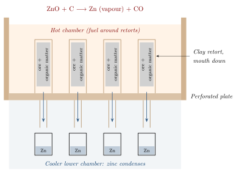

Chapter 7: Yaśada: Zinc and the Zawar Retorts¶
7.1 The Problem of Zinc¶
Zinc (Sanskrit yaśada or jasada; the rasa texts’ rasaka is its ore, calamine) is chemically awkward. Copper, lead, tin and iron can be obtained by heating their ores with charcoal, and the metal collects in the furnace as a liquid or a solid bloom. Zinc oxide, however, is reduced by carbon only at temperatures of roughly 1000 °C or more, while zinc boils at 907 °C. At the temperature of reduction, therefore, zinc is produced as a vapour; in an ordinary furnace it is carried away with the furnace gases and re-oxidised to zinc oxide as soon as it meets air.
To obtain the metal, the vapour has to be led out of the hot reduction zone and condensed in the absence of air. This is a distillation, and it requires closed vessels, a reducing atmosphere, and a way of cooling the vapour quickly enough to condense it as metal rather than as oxide.
Before zinc could be distilled, it was already used in brass (an alloy of copper and zinc). Brass can be made without metallic zinc by the cementation process, heating copper with zinc ore and charcoal in a closed crucible so that zinc vapour is absorbed directly into the copper. Cementation brass was made in the Mediterranean world from about the 1st century BCE, and brass objects appear in north-west India from around the same period. Cementation, however, limits the zinc content to about 30 per cent and gives limited control over the composition (Craddock 1998; Craddock 1995).
7.2 Zawar: The Site¶
Zawar lies in the Aravalli hills about 40 km south of Udaipur in Rajasthan. Its ore bodies, like those of nearby Rajpura–Dariba, contain sphalerite (zinc sulphide) and galena (lead sulphide, often with silver). The ancient workings follow the ore deep underground. Radiocarbon dates from timber and charcoal in old workings at Zawar and Rajpura–Dariba show that mining began in the first millennium BCE, at first, it seems, for lead and silver (Craddock 2017, 1995).
The site was investigated from the late 1970s by a joint project of the British Museum, Hindustan Zinc Limited and Indian archaeologists, led on the British side by Paul Craddock. The project excavated smelting areas, recorded the mine workings, and studied the enormous mounds of discarded zinc-distillation retorts that surround the old smelting sites (Craddock et al. 1983; Craddock 2017).
7.3 Mining in the Aravallis¶
The lead–zinc–silver deposits of southern Rajasthan—at Zawar, at Rajpura–Dariba and Agucha, and elsewhere—were worked for well over two thousand years. The miners followed the richest parts of the ore bodies underground by shafts, inclined adits and large stopes, broke the rock by fire-setting, propped the galleries with timber and sorted the ore by hand at the surface; how such workings are recognised and dated was explained in Chapter 4 (Craddock 2017, 1995). The deepest workings reached well below the water table, so that the mines had to be drained, probably by hand-lifting. Mining of this kind was dangerous and laborious. Little is known about the people who did it, but they were presumably members of specialist mining and smelting communities working for rulers or merchants who controlled the mines; in the medieval period the mines of Mewar were an important source of revenue for its rulers.
7.3.1 Lead and Silver¶
Before zinc, the main products of the Aravalli mines were lead and silver. Galena was smelted to lead, and the silver it contained was recovered by cupellation, leaving large quantities of litharge (lead oxide) as a by-product. Craddock and his colleagues found extensive remains of lead–silver smelting at Rajpura–Dariba and Zawar, dated from the late first millennium BCE onwards; the scale of the remains indicates production well beyond local needs, at a time when silver was the metal of the punch-marked coinage (Craddock 2017). The smelting of lead and the cupellation of silver released large amounts of lead fume; the health of the workers was presumably severely affected, as it was in lead and silver mining elsewhere in the pre-modern world.
7.4 The Distillation Process¶
The Zawar process, as reconstructed from the excavated furnaces and retorts, worked as follows (Figure 7.1) (Craddock et al. 1983; Craddock 1998).
-
Ore preparation. The sulphide ore was concentrated and roasted to convert zinc sulphide into zinc oxide.
-
Charging the retorts. The roasted ore was mixed with organic material and packed into elongated clay retorts, each with a narrow neck. A stick placed in the charge seems to have been used to keep a channel open for the vapour.
-
Setting the retorts. The retorts were placed upside down—mouth downwards—in perforated clay plates that formed the floor of a furnace chamber, so that the body of each retort lay in the hot chamber above and its neck projected into a cooler chamber below. Each furnace held a large number of retorts.
-
Heating. The upper chamber was fired. In the retorts, carbon reduced the zinc oxide, and zinc vapour formed.
-
Condensation. The vapour passed downwards through the necks into the cooler lower chamber, where it condensed in collecting vessels as liquid zinc, protected from air.

The essential idea is distillation per descensum: the vapour is led downwards, away from the hot zone, into a cool, air-free space where it condenses. The rasa texts knew downward distillation (adhaḥpātana) as a general laboratory technique, and the Zawar furnaces applied the same principle on an industrial scale.
7.5 Dating and Scale¶
Radiocarbon dating of charcoal and organic material associated with the retorts indicates that zinc distillation at Zawar was under way by about the 9th–10th century CE. Production expanded greatly from about the 14th century, when the bulk of the surviving retort debris was formed, and continued, with fluctuations, into the early 19th century (Craddock et al. 1983; Craddock 2017). Older claims that distillation at Zawar began in the 6th century, or earlier, are not supported by the published dates.
The scale was very large. The heaps of discarded retorts and furnace debris are among the largest remains of pre-industrial metallurgy anywhere, and they represent production over several centuries. Estimates of the total output vary and depend on assumptions about yields; what is clear is that Zawar was an industrial enterprise, not an experimental workshop. Table 7.1 outlines the sequence of activity.
| Period | Activity |
|---|---|
| 1st mill. BCE | Mining of the lead–zinc–silver ores begins (Zawar, Rajpura–Dariba) |
| c. 9th–10th c. CE | Earliest dated zinc-distillation retorts |
| c. 14th–16th c. CE | Large-scale production; bulk of retort debris |
| to early 19th c. | Continued production at lower levels; eventual cessation |
7.6 Zinc in the Sanskrit Texts¶
The rasa texts describe the treatment of rasaka (calamine) and the extraction of its “essence” (sattva) by heating it with organic materials in a closed crucible, with the product collected as a tin-like metal. Historians from P. C. Ray onwards have read these passages as describing the distillation of zinc (Ray 1956; Biswas and Biswas 1996). Zinc as a named metal (yaśada, jasada) appears in Sanskrit lexicons and medical texts from the later medieval period, and the later rasa compendia list it among the metals. The textual descriptions are small-scale laboratory procedures; there is no Sanskrit account of the Zawar furnaces, which belonged to the world of miners and smelters rather than of alchemists.
7.7 Brass¶
The main use of metallic zinc was to make brass (rīti, pittala) by direct alloying with copper, which allowed higher and better-controlled zinc contents than cementation. Brass became the dominant metal for domestic vessels, lamps, ritual objects and many images in medieval and early modern India, and it was used for coins, astronomical instruments and inlay work.
The difference between the two methods of making brass can be seen in analyses. Cementation brass rarely contains more than about 28–30 per cent zinc, because the copper cannot absorb more zinc vapour under the conditions of the process; brasses with substantially higher zinc contents, or with very consistent compositions, indicate the use of metallic zinc. Analyses of dated Indian brass objects, especially inscribed Jain images, show a rise in zinc contents in the medieval period that is consistent with the availability of zinc from Zawar (Craddock 1998).
Zinc was also used for the alloy of Bidri ware, the blackened, silver-inlaid metalwork named after Bidar in the Deccan, whose body is mainly zinc with a little copper (Chapter 8).
7.8 Zinc Elsewhere¶
Table 7.2 places Zawar beside the later zinc industries of China and Europe.
| Region | Date | Notes |
|---|---|---|
| India (Zawar) | from c. 9th–10th c.; large scale from c. 14th c. | Downward distillation in clay retorts |
| China | from c. 15th–16th c. | Retort process described in the Tiangong Kaiwu (1637); large-scale production; much zinc exported to Europe |
| Europe | 18th c. | William Champion’s English patent (1738) and works at Bristol (downward distillation); later Silesian and Belgian horizontal retorts |
| Modern | 20th c. | Electrolytic and blast-furnace processes |
Before Champion, Europe imported zinc (known as tutenag or spelter) from Asia, mainly from China. Champion’s process used downward distillation like that of Zawar, and it has been suggested that he learned of the Indian method from reports brought back from Asia. There is no direct evidence for this; the similarity may equally reflect the fact that downward distillation is an obvious solution once the problem is understood (Craddock 1998). What can be said firmly is that the Zawar retorts are the earliest known evidence for the distillation of zinc on an industrial scale.
7.9 Thermodynamic Notes¶
The difficulty of zinc can be summarised in a few numbers (Table 7.3).
| Quantity | Significance |
|---|---|
| Boiling point of zinc: 907 °C | Zinc is a vapour at the temperature needed to reduce its oxide |
| Reduction of ZnO by carbon: appreciable only above c. 1000 °C | Requires a hot, strongly reducing environment |
| Melting point of zinc: 420 °C | Zinc condenses as a liquid if cooled below its boiling point without air |
| Re-oxidation of zinc vapour by CO\(_2\) or air | Condensation must be rapid and protected from air |
The Zawar smelters solved these problems empirically: the closed retort kept the charge in a reducing atmosphere; the inverted orientation led the vapour quickly out of the hot zone; and the cooler chamber below allowed it to condense. This is an impressive piece of practical chemical engineering, achieved without any theory of chemical thermodynamics.
7.10 Zinc in Medicine¶
The later rasa texts prescribe calcined zinc (yaśada bhasma) and preparations of calamine, for example for eye diseases and for the urinary disorders grouped as prameha, a category that includes but is not identical with diabetes. Zinc is an essential trace element, and zinc oxide is used externally in modern medicine; but neither fact shows that a traditional zinc preparation is effective for any particular disease. Claims that the use of yaśada bhasma in prameha “anticipated” modern knowledge of zinc and insulin read modern science back into the texts.
Health and Safety Note
Zinc ores such as those of Zawar occur with lead, and traditionally prepared zinc medicines may contain lead; zinc itself is harmful in excess. No doses or methods are given; see the full note in Section 1.1.
7.11 Zawar as Heritage¶
The remains at Zawar—mine workings, smelting areas and retort mounds—are of international importance for the history of technology. Modern mining by Hindustan Zinc Limited continues in the area, which has both made the ancient workings accessible and threatened them. The British Museum project, whose results Craddock has published in full (Craddock 2017), provides the basis for any future protection and interpretation of the site.
What Is Secure and What Is Debated
Secure: zinc must be distilled because it boils below the temperature at which its oxide is reduced; at Zawar it was distilled downwards in clay retorts from about the 9th–10th century CE and on a very large scale from about the 14th, the earliest known industrial production of the metal; and metallic zinc made high-zinc brass and Bidri possible. Debated: the total output of Zawar; whether the rasa texts’ extraction of the “essence” of calamine describes the same process; and whether Indian knowledge reached the zinc-makers of China or of 18th-century England.